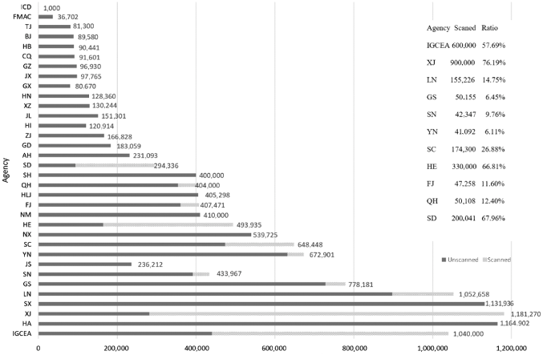

Analog Data in China#
The history of seismographic observation in the first half of the twentieth century on the Chinese mainland can be divided into three eras. The first era was from 1904 to 1929 when there were some seismographic stations that were built in Mainland China by foreigners. The second era started from 1930 when the stations near Beijing and in Nanjing were built by the Chinese. Advanced seismographic instruments were purchased from abroad, including Wiechert instruments with the heaviest pendulum of 17,000 kg. The development of Chinese seismic observations was disrupted by the Japan invasion and war in 1937. The third era was during a time of war, from 1937 to 1948. (Wong, 2020)
By the end of 1976, 29 earthquake agencies had established regional seismic networks. After 1985, 17 telemetered networks were added. (Chai et al, 2020)
Stations#
About 400 stations nationwide.
Instrumentation#
Wiechert
Galitzin
Galitzin-Wilip
Omori
DD-1, VGK (short period)
763, DK-1 (intermediate long-period)
and tiltmeters, fluid meters, strain meters, and geomagnetic and magnetometers.
Recording Medium#
paper
photosensitive film
analog tape
Data Availability#
Approximately 13.5 million analog records have been produced in China between 1904 and 2007 with about 9.7 million still in existence. During this period multiple regional agencies operated seismic networks. About 3.13 million of these records have been scanned (Chai et al., 2020). Scanning efforts continue by individual agencies as well as the Institute of Geophysics of the China Earthquake Administration.

The number of existing analog seismic and the scanned ratio of each Agency in China (by December 2019). IGCEA, Institute of Geophysics of the China Earthquake Administration. (Chai et al., 2020)
no. available (104) |
format |
dpi |
color |
|---|---|---|---|
110, 15 |
jpg, png-8 |
200 |
|
60 |
png |
300 |
|
26, 95 |
jpg, png |
600 |
Efforts are underway to digitize (vectorize) records from intermediate long-period (400,00 records) e.g. DK1 and SK, and long-period instruments for M≥5.0 earthquakes in China and M≥6.0 worldwide. These are stored in SEED and SAC formats.
See also Department of Monitor and Prediction in CEA (2005a, b,c) for a CD ROM of selected seismograms, ~540, from Xujiahui, Dalian, Qingdao, Chongqing and Nanjing stations for the time period from 1906 to 1948.
The data of China Analog Seismic Record Rescue Project are currently archived at the data center of The Second Monitoring and Application Center (SMAC), and use is constrained by the privacy policy of SMAC (see http://113.200.69.215:8080/). unverified
Contact#
For more information about this collection, please contact:
References#
Chai, X., Q. Wang, L. Mu, H. Wang, W. Wang, F. Zhu, and W. Liu (2020). Rescue Work and Progress of Analog Seismograms in China, Seismol. Res. Lett. 91, 2704–2718, doi: 10.1785/0220200077.
Department of Monitor and Prediction in China EarthquakeAdministration (CEA) (2005a). Album of Historical Seismograms Recorded in Early Chinese Seismographic Stations, Vol. 1, ShanghaiZikawei Seismographic Station (1906–1948), Earthquake Publish House, Beijing, China, 1–257 (in Chinese).
Department of Monitor and Prediction in CEA (2005b). Album of Historical Seismograms Recorded in Early Chinese Seismographic Stations, Vol. 2, Dalian Seismographic Station (1918–1945),Earthquake Publish House, Beijing, China, 1–303 (in Chinese).
Department of Monitor and Prediction in CEA (2005c). Album of Historical Seismograms Recorded in Early Chinese Seismographic Stations, Vol. 3, Qingdao City Observatory (1912–1925), Chongqing Beibei (1943–1946) and Nanjing Shijingtai Seismographic Station (1947–1948), Earthquake Publish House, Beijing, China, 1–228 (in Chinese).
Wang, J (2020). Conservation and Utilization of Historical Seismograms from Early Stage (A.D. 1904–1948), Mainland China, Seismol. Res. Lett. 91, 1394–1402, doi: 10.1785/0220190268.